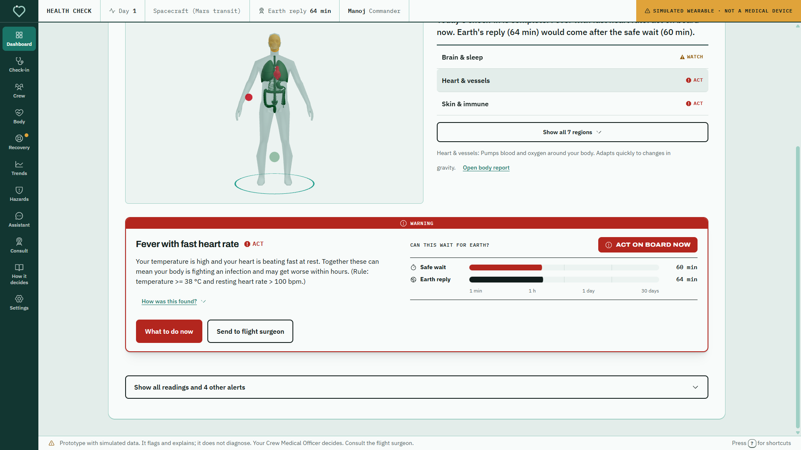
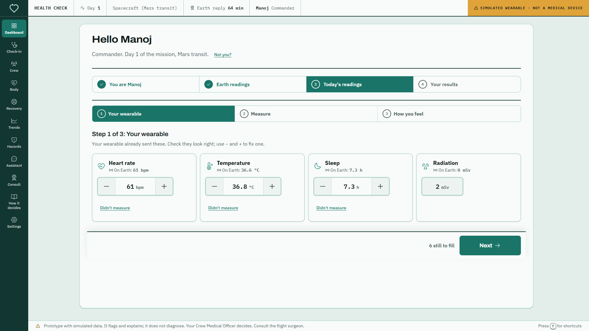

ASTRONAUT HEALTH MONITOR
ASTRONAUT HEALTH MONITORCan this wait for Earth?
Our app answers that every day, on board, for every astronaut.
Team Spades
Sanjith S · Manoj S · Alan Jacob Sam S · Aiswarya S
Challenge: Create Health Monitoring Software for Astronauts on Space Missions · 2026 NASA Space Apps Challenge

A fever on the way to Mars. Earth would reply too late, so the app says: act on board now.
Team Spades1 / 7
03 · The idea
Learn each person's normal on Earth. Compare every day in space.
Before launch · on Earth

A doctor records 10 days of readings, allergies and daily medicines for each crew member.
After launch · in space

One minute a day. Sign in with a PIN; the wearable fills in the rest.
Touch-first: big buttons, an on-screen number pad, nothing to type. Works fully offline.
Team Spades · Astronaut Health Monitor4 / 7